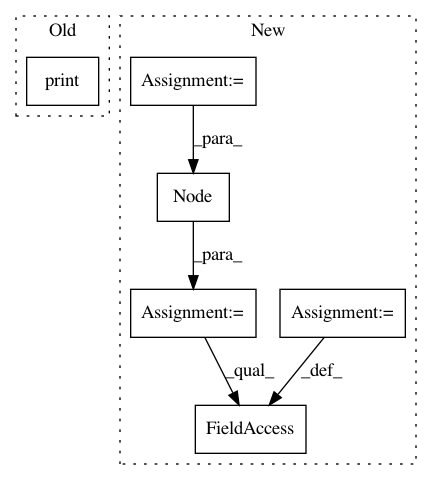

e0c9d018aca7bf05486c385484d5ed1c37bac423,pynets/diffconnectometry.py,,coreg_mask_to_diff,#Any#Any#,177
Before Change
flirt.run()
args = "-bin"
maths = fsl.ImageMaths(in_file=out_file, op_string=args, out_file=out_file)
print("\nBinarizing custom mask...")
os.system(maths.cmdline)
return out_file
After Change
out_file = "%s%s" % (dwi_dir, "/mask_custom_diff.nii.gz")
mask_transforms_wf = pe.Workflow(name="wm_transforms")
inputnode = pe.Node(niu.IdentityInterface(fields=["dwi_infile", "mask", "out_file", "mat_file", "dwi_dir"]),
name="inputnode")
inputnode.inputs.dwi_infile = dwi_infile
inputnode.inputs.mask = mask
inputnode.inputs.out_file = out_file
inputnode.inputs.mat_file = "%s%s" % (dwi_dir, "/xfms/MNI2diff.mat")
inputnode.inputs.dwi_dir = dwi_dir
flirt = pe.Node(interface=fsl.FLIRT(cost_func="mutualinfo"), name="coregister_wm")
flirt.inputs.apply_xfm = True
flirt.inputs.out_matrix_file = "/tmp/out_flirt.mat"
In pattern: SUPERPATTERN
Frequency: 3
Non-data size: 6
Instances
Project Name: dPys/PyNets
Commit Name: e0c9d018aca7bf05486c385484d5ed1c37bac423
Time: 2018-10-13
Author: dpisner@utexas.edu
File Name: pynets/diffconnectometry.py
Class Name:
Method Name: coreg_mask_to_diff
Project Name: dPys/PyNets
Commit Name: e0c9d018aca7bf05486c385484d5ed1c37bac423
Time: 2018-10-13
Author: dpisner@utexas.edu
File Name: pynets/diffconnectometry.py
Class Name:
Method Name: coreg_WM_mask_to_diff
Project Name: TheAlgorithms/Python
Commit Name: 6903d95b41206d757540f48230e245e7f28b8667
Time: 2017-10-02
Author: rafaelleru95103@gmail.com
File Name: data_structures/AVL/AVL.py
Class Name: AVL
Method Name: rotate_right